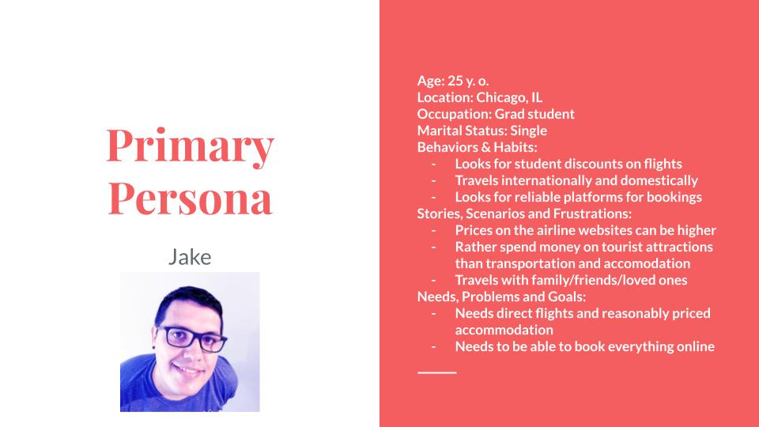
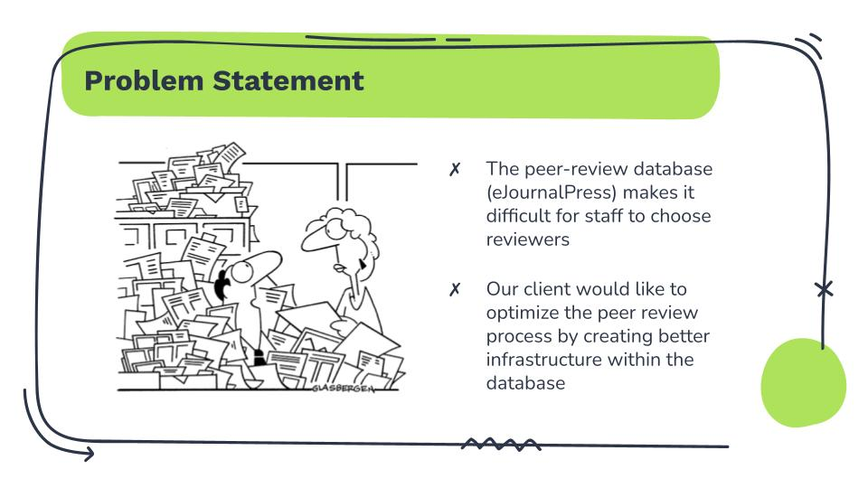
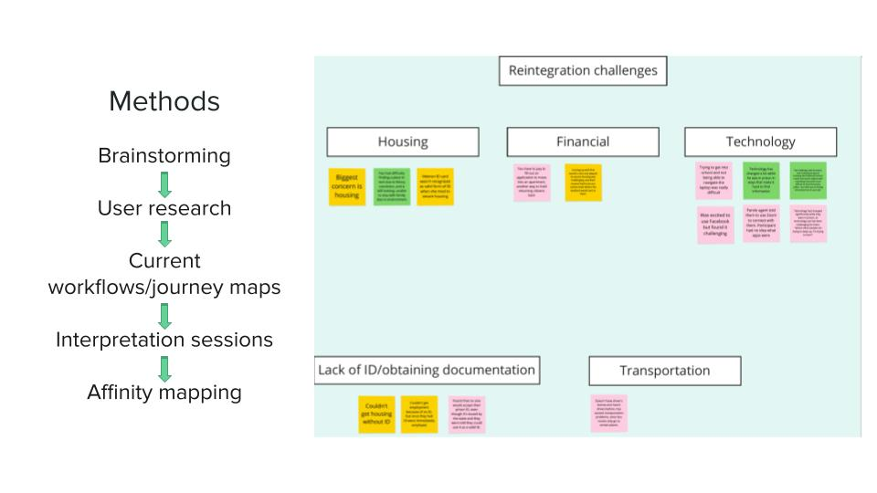
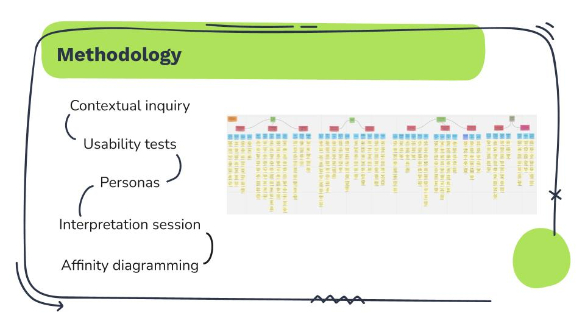
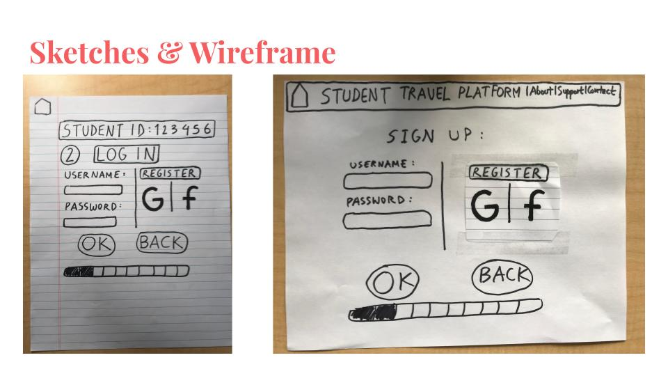
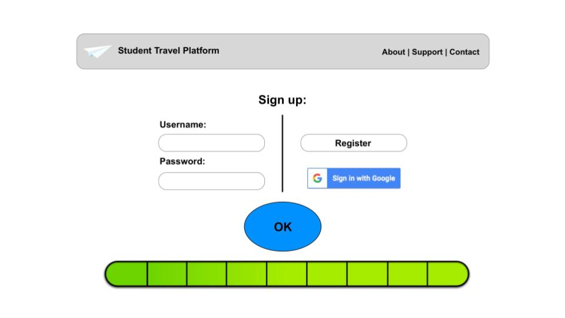
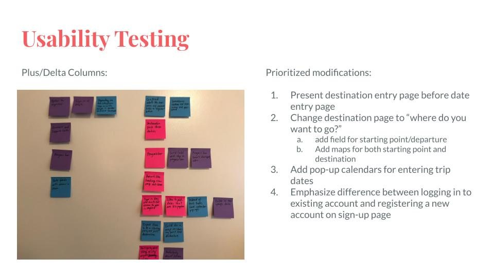
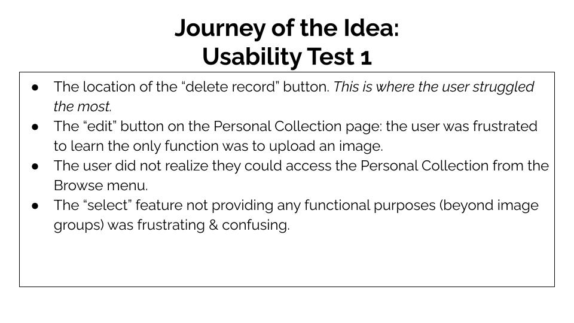
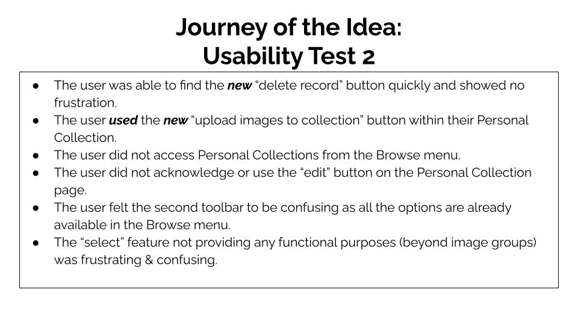

Design thinking
Empathize
I have experience creating primary, secondary and anti-personas. I believe this practice grounds the research by strengthening a human-centered approach. This allows me to keep the end-users' goals in mind throughout the design process. Additionally, accessibility is an urgent concern of mine; I am a proponent of the understanding that an inclusive design strategy ultimately benefits a broad range of individuals. I have personally created a number of interview protocols that served as the foundation for executing a robust qualitative interviewing plan, and I have effectively applied contextual inquiry as a research methodology on several team projects.
Define
  In my past project engagements I have found it necessary to take ample time to identify problem statements driven by user data, in order to inform next steps. I have successfully worked with project teammates to analyze the qualitative data sourced from dozens of user interviews through affinity mapping which greatly supports subsequent design activities. I personally find creating an affinity diagram to be one of the most rewarding project milestones. Although this component of qualitative research can be quite laborious, I draw much inspiration and gratifaction from interrogating assumptions and biases as a team. In some cases, problem statements have to be refined in accordance with new insights revealed through the design process. I am confident in my ability to facilitate after-action reviews, discuss scope and set expectations with stakeholders as new considerations emerge.
Ideate
Valuable learnings are gleaned through grouping the results of the contextual inquiry phase, and I rely on sketching and creating low fidelity wireframes to rapidly brainstorm and validate ideas. Prioritizing the incorporation of peer feedback at this stage reinforces the execution of high fidelity prototyping and the development of more detailed features and functionality.
Prototype
Once the ideation phase has resulted in recommendations that address the hypothesis, I have been able to produce high fidelity clickable prototypes through tools such as Sketch + InVision and Figma that animate the proposed solution.
Test
  Finally, the testing phase confirms if the resulting solution will satisfy the original problem statement and therefore bring value to the target audience. I have written task scenarios and implemented usability tests with users that have allowed for meaningful iterations of the design plan, and the outcome has been final deliverables that culminate in a plan to generate an intuitive, substantive, and above all else useful product.